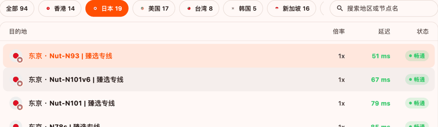

Roxi · 选线工作台 · 从标签到判断
机场推荐 2026：Roxi把地区名之外的选线依据摆在面前
机场推荐 2026 的“日本”“香港”地区名单只是标签，不是适合你当前网络的结论。Roxi 把地区筛选、节点搜索、延迟与状态放在线路页，让你从可见信息开始选线，而不是凭一个名称决定。
查看安装路线卡- Android · 保存APK后按系统提示安装
- iPhone / iPad · 先打开安装说明
- Windows · 选择EXE安装路线
- macOS · 获取DMG安装文件
- Linux · 查看deb兼容安装入口
iOS 为安装说明，不是IPA直链；Linux为批准的deb入口，兼容性请先核对客户端清单。
先确认设备与客户端的对应关系把地区、选择方式和线路状态拆开看
地区与节点搜索
按地区或节点名缩小列表。素材中有香港、日本、美国、台湾、韩国、新加坡等地区；这里不把地区出现等同于某个网站一定可用。
组内自动选择
客户端提供组内最低延迟负载均衡的自动选择功能。先选定组再理解自动选择的范围，它不是对所有网站的速度保证。
延迟、状态与测速
线路页显示延迟与状态并提供测速入口。这些指标帮助观察当前候选，不等于下载带宽、持续稳定性或服务可用性证明。

选择线路时，哪些推论要慢一点？
机场推荐 2026 中写“低延迟机场推荐”，就能据此选最快吗？
不能。延迟只是一个观察指标，和下载速率、网站响应不是一回事。Roxi 有测速与状态显示，但本文没有实测排名，也不保证哪条在你的网络最快。
便宜机场节点如何比较，便宜机场节点推荐看什么？
别只看价格标签。便宜机场节点仍应结合额度、客户端支持和自己的使用环境判断；先用免费体验了解界面，不把便宜当成持续可用的证明。
“便宜的机场推荐”里，哪些免费限制不能省略？
Roxi 免费版每天30分钟全速，之后约5Mbps。VIP为25元200GB、SVIP为50元500GB，均每30天；新用户有专属优惠，注册即可免费体验。
专线机场节点和“直连机场推荐”的标签能直接说明线路架构吗？
不能只靠标签。Roxi 素材中有臻选专线、高速直连和专线中转等名称；专线机场节点的标签不等于已证明物理独享、带宽独享或指定运营商路径。
“专线机场推荐”“iepl/iplc专线节点是什么”这些问题，这里能给出Roxi架构结论吗？
不能。本页只说明已确认的客户端选线功能，没有供应链、物理线路或IEPL/IPLC认证证据，不把截图标签推导成具体线路合同或解锁承诺。
Roxi 的无日志声明等于独立审计结论吗？
不等于。“无日志”是品牌声明，本页没有独立审计证据，也不据此声称所有网络环节完全不产生任何数据。
把试用窗口与每30天额度并排比较
套餐用于说明价格与额度，不表示所有节点都具备相同网络表现。新用户专属优惠与注册免费体验仍以产品实际显示为准。
便宜机场节点：先核额度，不把价格当可用性
| 方案 | 价格 | 额度与时段 |
|---|---|---|
| 免费 | ¥0 | 每天30分钟全速，之后约5Mbps |
| VIP | ¥25／30天 | 200GB |
| SVIP | ¥50／30天 | 500GB |